Context
We've all experienced websites that just work: finding the right information feels effortless, and the design quietly guides you without friction. These sites might look simple, but behind them is a thoughtful process of iterative design grounded in user needs and business goals.
That's exactly the approach I took when working with Sesame, a patient-centered healthcare startup focused on connecting patients to affordable care. A key part of Sesame's platform is a medical content hub featuring blogs and videos that helps patients access health information and enables providers to attract visits through the platform. In this project, I worked in a team of four on the iterative design of their blog page. In this case study, I'll walk through how we approached the their current problems, analyzed the tradeoffs of different solutions, and collaborated with stakeholders to come up with the new design.
Part 1: Understanding the Problem Statement
Sesame's article and blog pages generate strong web traffic, but they currently face key challenges in converting readers into paying users. To address this, we identified four main areas of improvement:
- Content Accessibility:
Articles are overly text-heavy, which hinders readability and makes it hard for users to extract quick, actionable insights.
- Weak Conversion Pathways:
There are no effective calls to action or integration with subscription or booking funnels, leading to missed opportunities for conversion.
- Inefficient Content Creation:
Content is produced by the marketing team and part-time medical experts, creating bottlenecks. There's also no easy way for providers to contribute directly.
- Missed AI Opportunities:
AI tools could support providers in generating both written and video content, improving both speed and quality of production.
Part 2: Sketching and Wireframing
Now that we understand the problems, we can brainstorm ideas and create sketches. Below are 4 sets of sketches covering 4 key pages we believe are essential to solving these issues in the content hub: a blog article page, a provider dashboard, and AI-assisted blog and video creation pages.
Note: all sketches and wireframes are scrollable.
Set 1
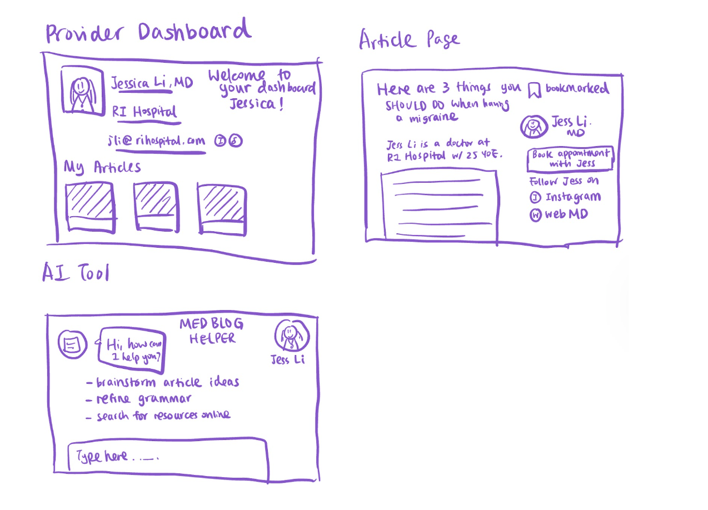
Set 2
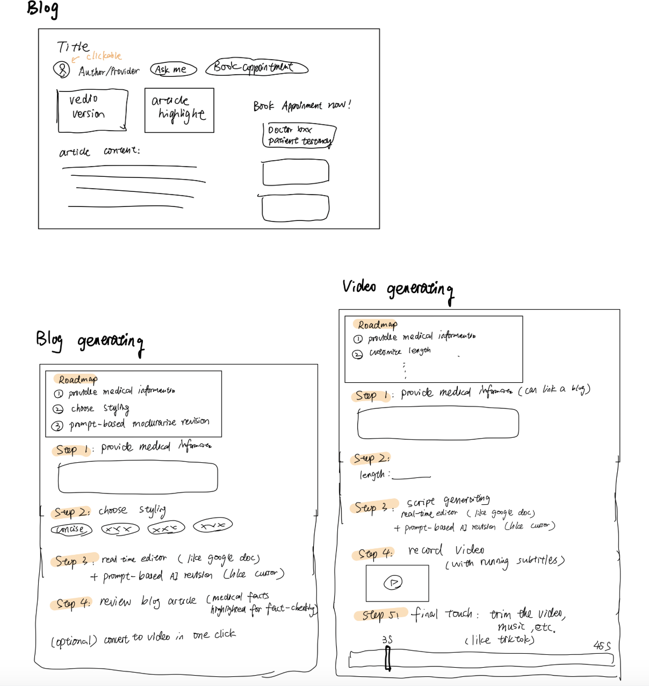
Set 3
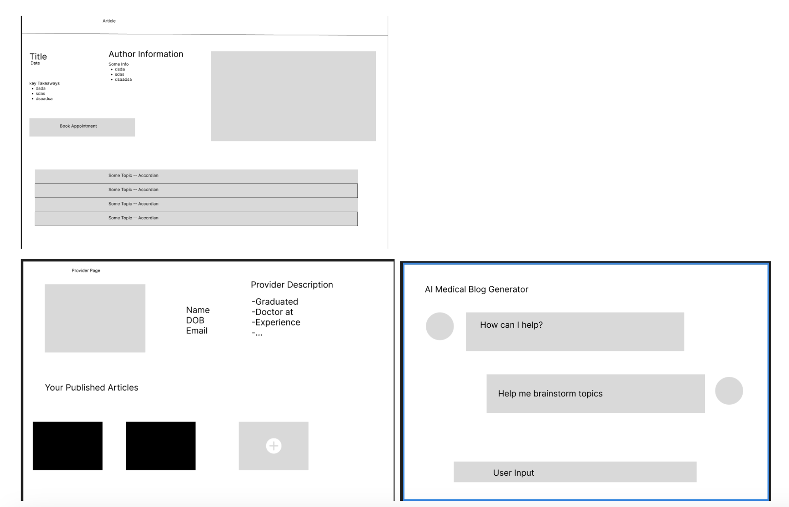
Set 4
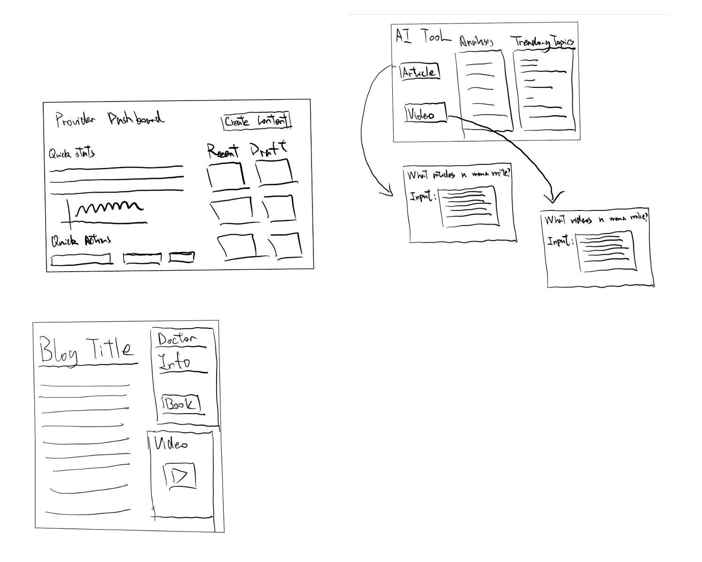
After sketching, we discussed the pros and cons of each design and combined elements from the best ones to move forward with. Below, we created low-fidelity wireframes for the selected designs as a starting point for the first round of feedback.
Page 1: Blog Homepage
- Although our original sketches didn't include a blog homepage, we realized during team discussions that adding one would help users explore topic-based content and browse by popularity, hence boosting user engagement and improving conversion rates.
- We moved away from a text-heavy layout and designed a modular, user-focused experience that feels more dynamic and personalized.
- The hero section now features a welcome message and search bar, helping users find relevant health content quickly. This improves accessibility and encourages active exploration over passive reading.
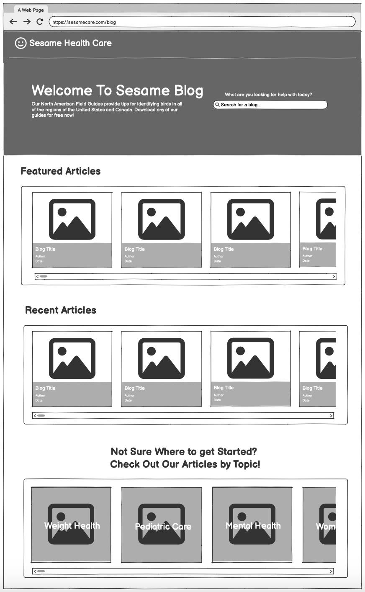
Page 2: Individual Article Page
- We used the design from Set 1 as the baseline, since its layout is the most intuitive and offers a clear information hierarchy.
- We integrated a floating provider section from Set 2. Users can click into the provider's profile, book an appointment, or ask questions. By increasing provider visibility, we aim to boost conversions and support personal brand-building.
- To improve article readability, especially for users who prefer visual content, we added the video section from Set 4.
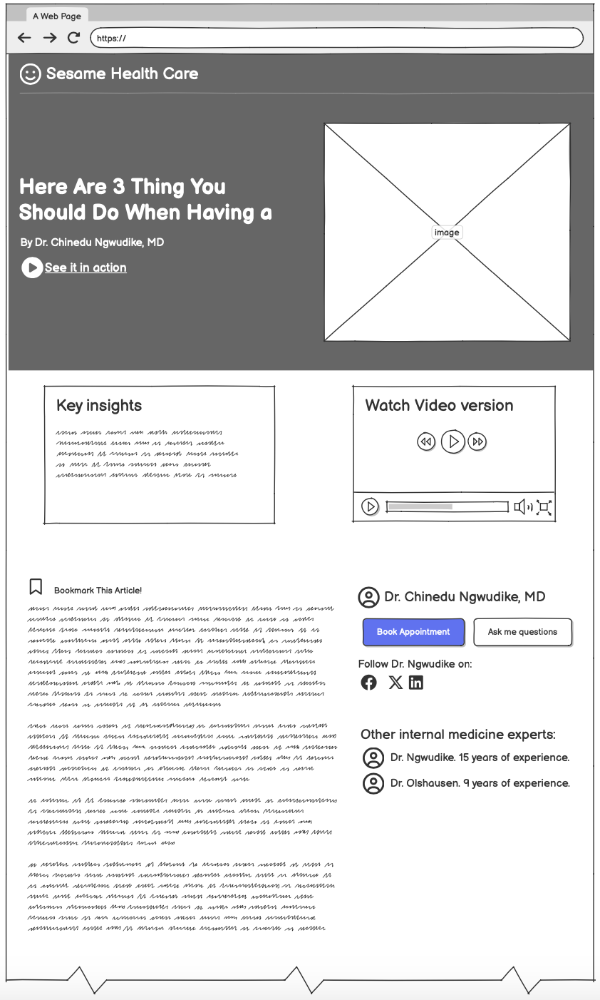
Page 3: Provider Dashboard
- We combined the strongest elements from Sets 1, 3, and 4, using Set 4 as the foundation and layering in key features from the others.
- The most important addition is the Quick Stats section, which gives providers a snapshot of their content's performance, broken down by articles and videos.
- This visibility aligns with Sesame's goal of encouraging consistent content creation by making performance data easily accessible and actionable.
- We also placed a "Create Content" call-to-action at the top right to prompt immediate engagement.
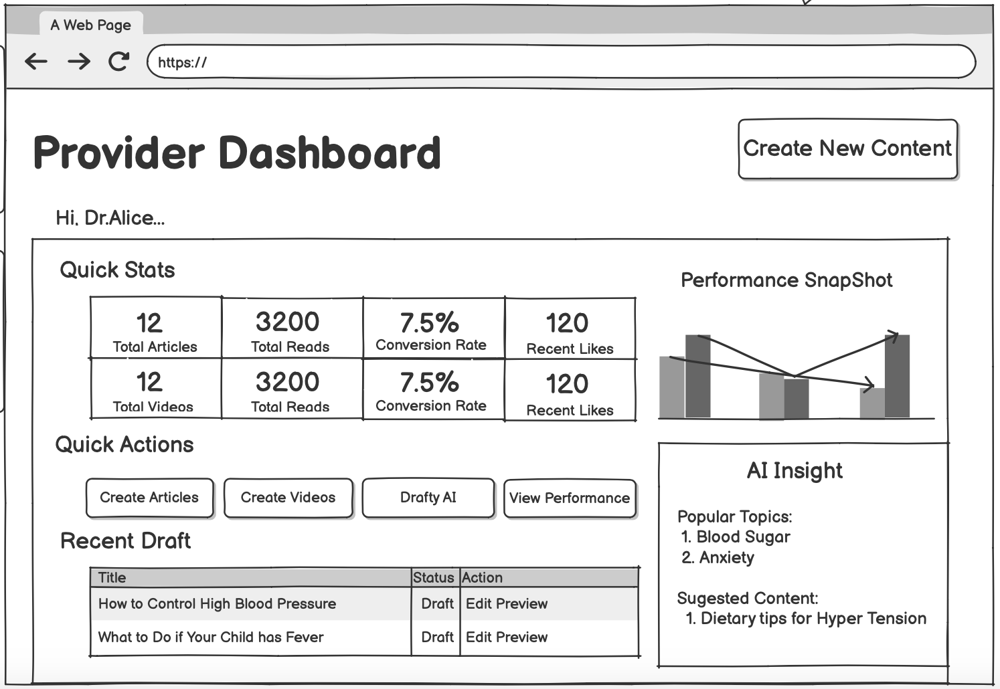
Page 4: AI Assistant Page
- We explored a step-by-step, modularized AI assistant that simplifies article drafting by guiding providers through clear steps. However, this approach limited flexibility and creativity.
- We also considered a chat-based AI assistant, which gives providers more freedom but is more open-ended and might not always lead to the intended outcomes.
- We chose the chat-based model because users are already familiar with this format through tools like ChatGPT and Claude, which aligns with their mental models of how AI works.
- We also introduced an interactive canvas for editing, where users can highlight specific sentences and prompt the AI to revise them.
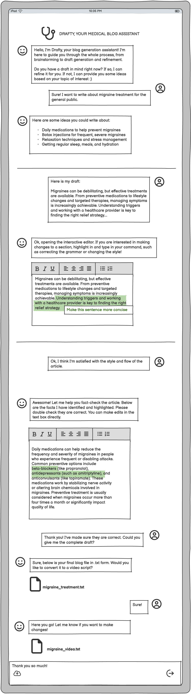
Part 3: First Round of Feedback from Startup
After sharing our low-fidelity wireframes with Sesame's product team (advisor Ravi Mehta and design lead Chris Chon), we received thoughtful and actionable feedback:
- Home page: The team liked the simplicity and modular layout of the homepage. Also, they emphasized the challenge to implement more visual hierarchy within the "Featured Articles" search as well as a more interactable search functionality along with the search bar.
- Article page: They emphasized the need for consistent styling across articles, as well as the possibility of including related content and utilize the knowledge of authenticated users in the insights section.
- AI assistant page: Ravi pointed out the need to balance between modular approach while also ensuring usability of the page.
- Provider dashboard: Both were excited about the AI insights section; Chris suggested including more meaningful stats to better motivate providers, while Ravi emphasized offering clearer guidance on what topics providers should write about.
Part 4: Hi-Fi Prototyping
We refined our designs based on the feedback and below are the final high-fidelity prototypes for five redesigned screens. Each layout emphasizes usability, responsiveness, and visual hierarchy while addressing Sesame's problem statements.
Page 1: Blog Homepage
- Integrated a bold hero section with guided search prompts, directly addressing feedback about shifting users from passive reading to active exploration.
- Enhanced search functionality with natural language support, reflecting concerns about users struggling with medical jargon or not knowing what to search for.
- Redesigned the article layout to emphasize high-impact content, implementing feedback on improving visual hierarchy and user flow through the homepage.
Page 2: Individual Article Page
- The hi-fi design addressed the first feedback by moving the video to the hero section. For articles without a video, a hero image can be placed instead, making the overall layout more consistent.
- The hi-fi design incorporated the second piece of feedback by adding an "Explore More" section at the end of each article, recommending similar content to encourage continued engagement.
- The hi-fi design responded to the third feedback by tailoring the AI-generated key insights based on user data—for example, their demographics or health concerns.
Page 3: Provider Dashboard
- Displays article count, reads, bookings, and conversion rate with rank context (e.g., "Top 1% performer"), reflecting feedback to incentivize providers through status and performance comparison.
- Highlights trending topics and suggested content creation areas based on user interest and platform trends, addressing feedback about helping providers choose impactful topics.
- Clear CTAs for "Create Articles," "Use Drafty AI," and "View Performance" encourage frequent publishing and experimentation, aligning with feedback to turn insights into actions.
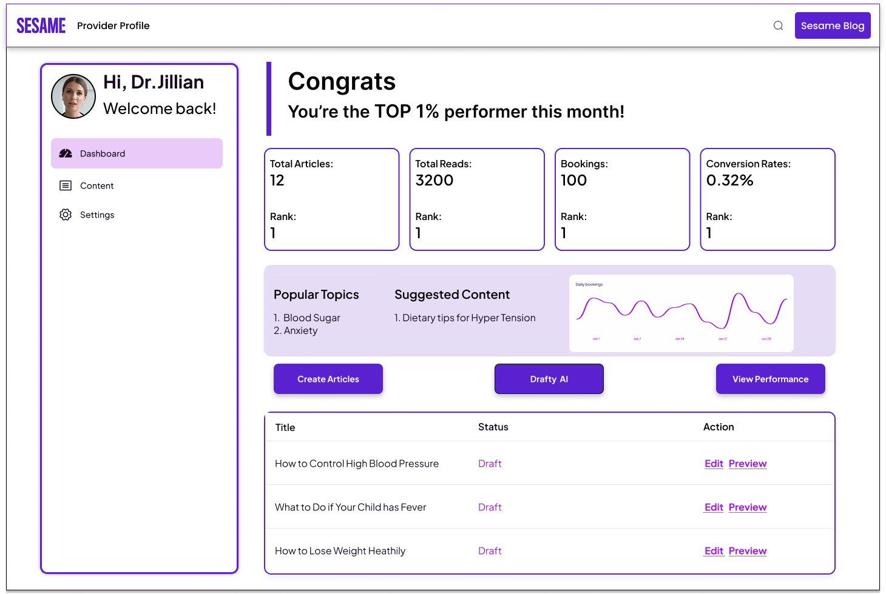
Page 4: AI Assistant Page
- We incorporated the startup's feedback to ensure the AI assistant and chat input prompts clearly state the type of content expected from users at each stage of the workflow.
- We also further refined features such as the two interactive canvases as the team members requested.
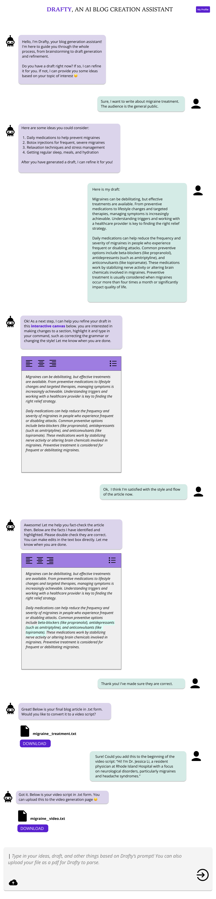
Page 5: Appointment Booking Flow
- This is a new page we added where patients can book directly from within article or provider views, streamlining their journey from discovery to conversion.
- Patients can browse available times across providers without toggling between multiple pages.
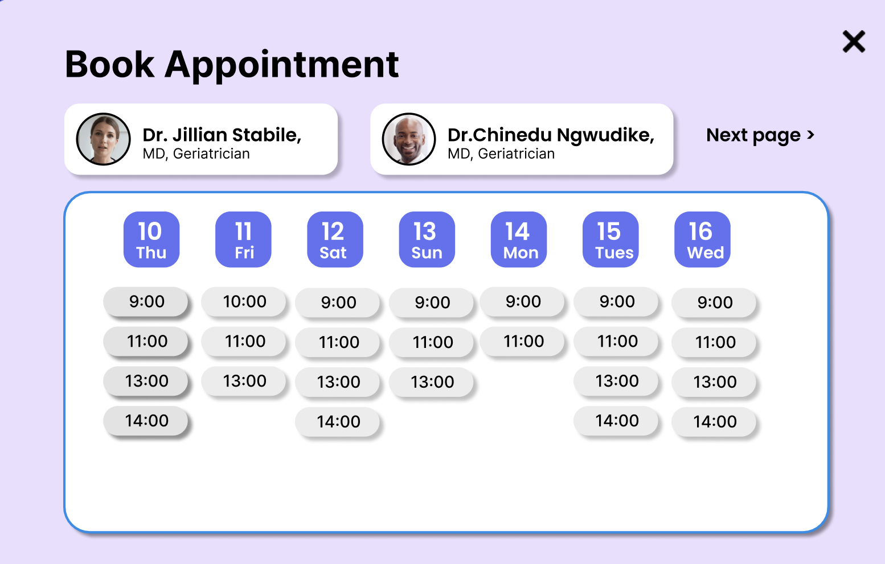
Part 5: Final Feedback and Reflection
After delivering our high-fidelity prototype, we conducted another review session with the Sesame team. They appreciated the clearer conversion pathways and praised the AI assistant's modularity and editing experience.
If we had more time, we would run usability tests on mobile responsiveness, A/B test the blog layout vs. provider-first layout, and gather analytics on engagement with Drafty AI. Overall, this project taught us the value of iterative user feedback and how collaborative design can support both patient and provider needs in real-world applications.
Conclusion
This project taught me that great design is never static: it's a continuous conversation between users, stakeholders, and designers. Working with Sesame showed me how to balance technical precision with business acumen, turning user feedback into actionable improvements. Most importantly, I learned that the best designs emerge when you treat every iteration as an opportunity to build trust and deliver real value to both patients and providers.